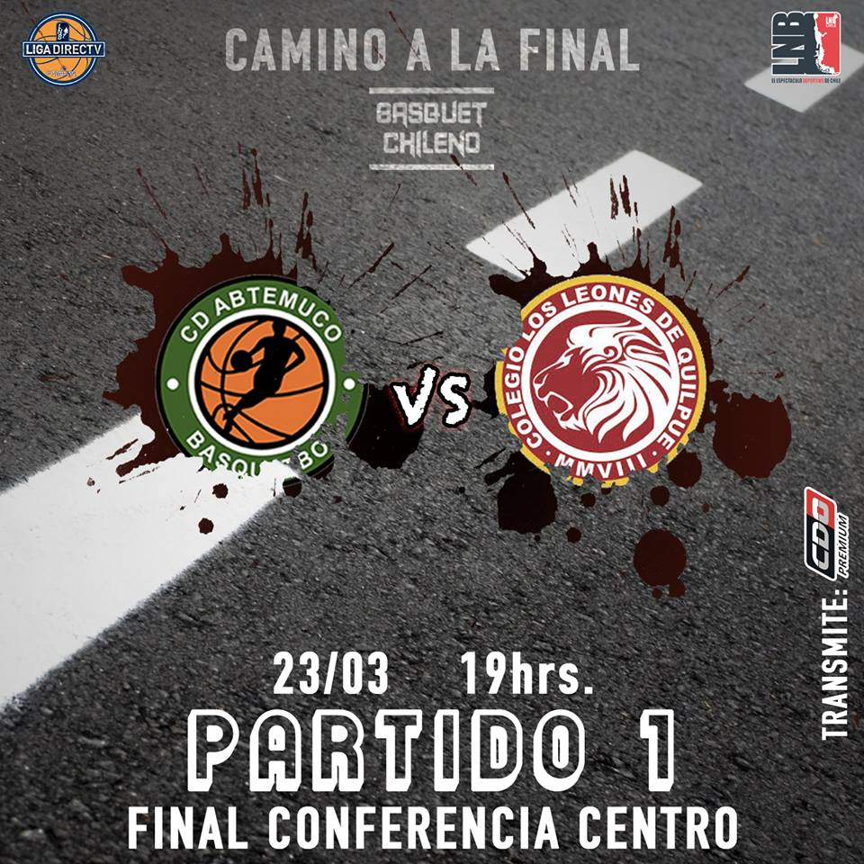
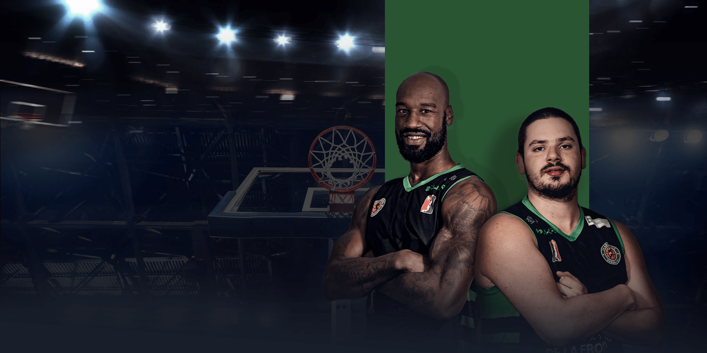

[LIGA NACIONAL]
¡SE ENCIENDEN LOS MOTORES EN EL CENTRO!
Este fin de semana comienzan las finales de conferencia en LNB CHILE, y el salto inicial lo protagonizan
CD ABTemuco Basquetbol y Club Deportivo Colegio Los Leones. El invitado y primer preclasificado del centro, AB Temuco, será el local en el primer partido de la serie al mejor de 7. Los dirigidos por Acuña vienen de derrotar en semifinales a Puente Alto, teniendo que pelear hasta el último juego. Leones, en tanto, viene envalentonado de una ardua gesta frente a Universidad de Concepción, pues dio vuelta un 3-1 en contra y se llevó la serie por 4 juegos a 3.
¿Quién golpeará primero en la serie?

Fuente: Basquet Chileno
Bahia Mansa
CD AB Temuco
